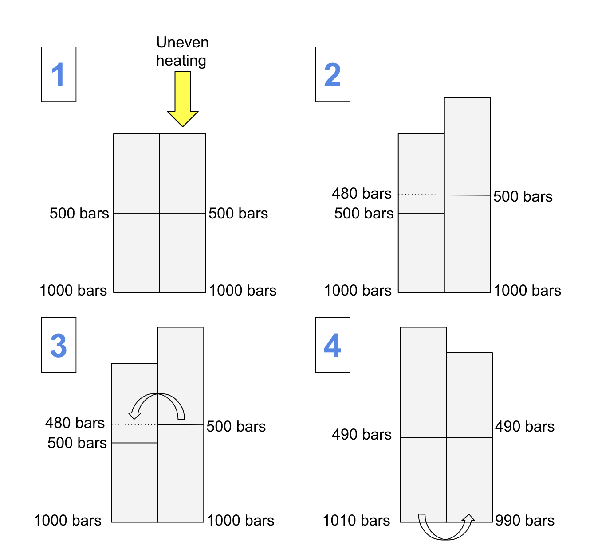

Lapse Rate
Convection Cells
Energy is transferred around the atmosphere primarily by convection since gas molecules are too spread out to transfer by conduction effectively. In convection, warm matter becomes less dense than cold matter and rises.
Lapse Rate Diagram
- First uneven heating warms the air in one column
- The heated air expands, which moves the 500 bar mark up higher in the hot column so that it is now next to the 480 bar mark in the cold column.
- Gasses move from high to low pressure, so hot air begins to move into the cold column.
- This transfer increases the total mass in the cold column and decreases mass in the hot. The surface pressures are unbalanced and cold air is moved to the hot column where it warms so the cycle can repeat.
Lapse Rate
As a section of air rises, it experiences a decrease in pressure. This change is because there is less air above it, pushing down on it. When the pressure decreases, air expands, and when it expands, it cools off. The ratio of temperature change to km rise is called the lapse rate. For dry air, the average lapse rate is 10 degrees lost for each km. What is interesting is that the lapse rate is different for moist air. Water has a high latent heat, which means that each water vapor molecule in the moist air carries a little bit of energy up in the column as the air section moves. When the air section cools off, some of the water droplets condense, which releases a bit of the energy they were storing, which warms the air. This process allows the water vapor to slow the cooling of the air, so that moist air section reaches the top of the column at a higher temperature than the dry air. The lapse rate for moist air is about -6 C/km.